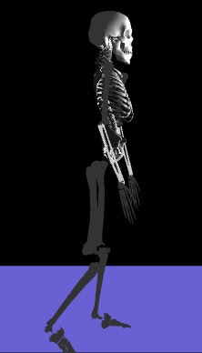

{benny.lo,y.sun16}@imperial.ac.uk
Documentation: Download Abstract
Sensor signal pattern recogition: Download MatLab source code
Design:The gait visualisation is programmed via HTML 5 with WebGL.
Gait parameters:The data is preprocessed using Matlab and results are saved into CSV files.
3D models:The 3D models are adapted from open sources 3D models and animations and simulations are all progammed using Java Script
Source code:The source code can be directly downloaded from the web site (via view source option on your browser).
Following assumptions were used in building the 3D model for visualisation:
The skeleton is an articulated 3D model and almost all joint angles can be rotated/controlled (except the wrists, where wrists rotation was not implemented)
|  |
The walking gait is simulated based on the timing (heel strikes, toe off, etc. timing) and gait parameters(foot angle, displacement etc) extracted from the raw sensor signals.
Each of the different phases within gait cycle was programmed (i.e. heel strike, mid-stance, toe off, etc.) and simulated (based on the timing and displacement information)
As it is too small to see the ankle and shoe angular rotations, 2 separate windows are designed to provide a zoomed in view to show the 3D rotations of the foots. A 3D shoe model was developed to illustrate the foot angular rotations.
| Left foot orientation | Right foot orientation |
|
|
| Left Foot Accelerometer | Right Foot Accelerometer |
| Left Foot Gyroscope | Right Foot Gyroscope |
| Location | X: | Y: | Z: |
| Color | R: | G: | B: |
| Color | R: | G: | B: |